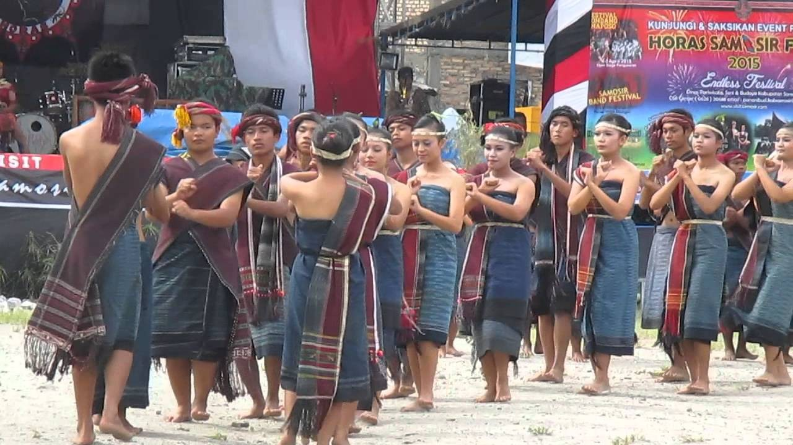
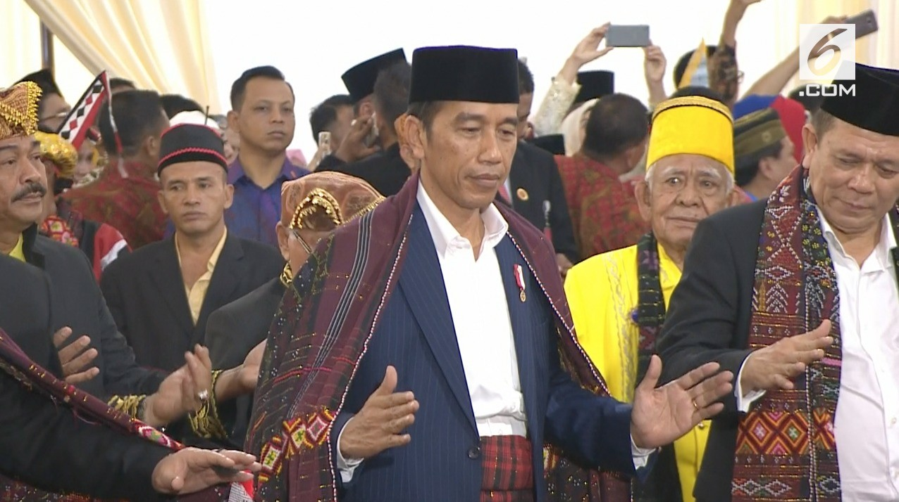
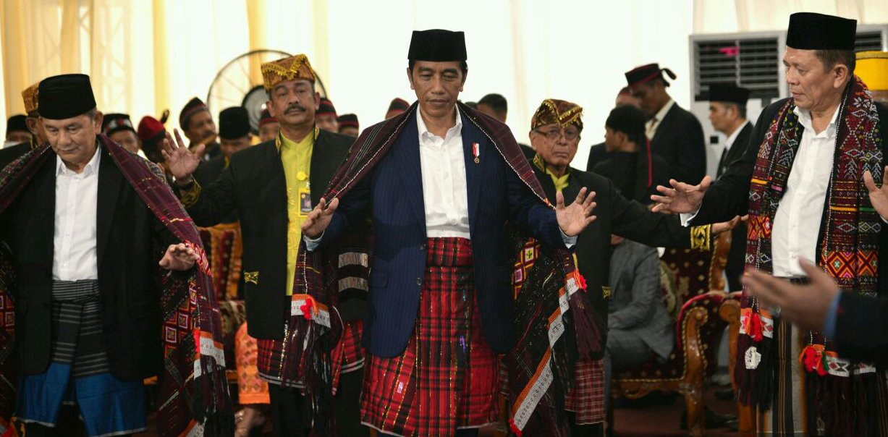
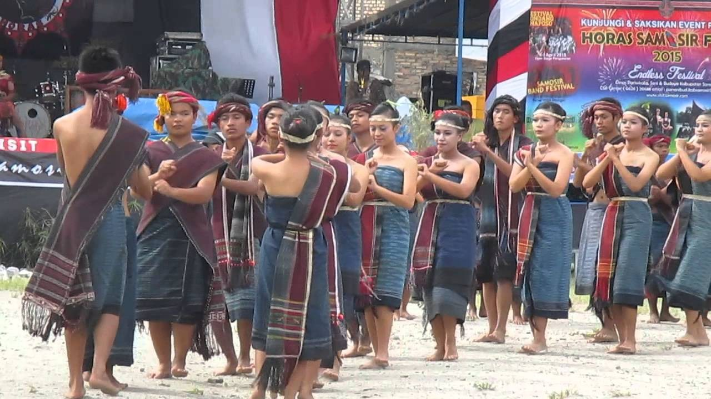
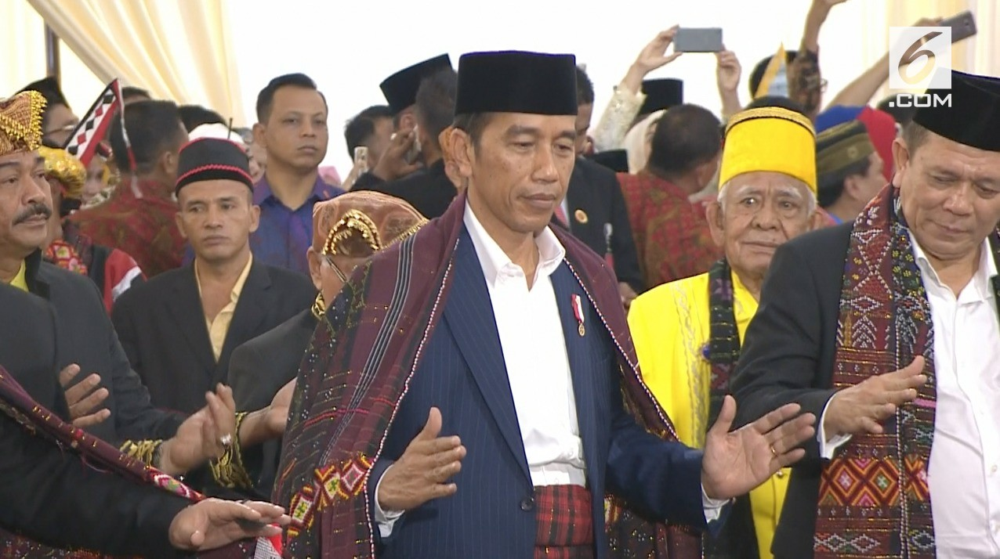
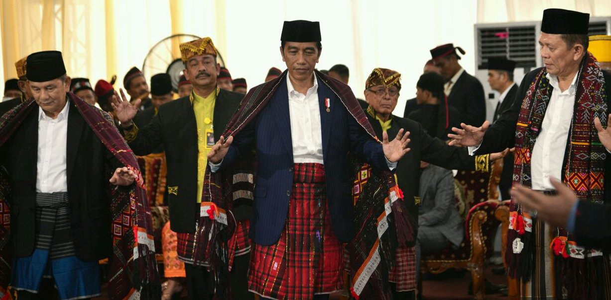
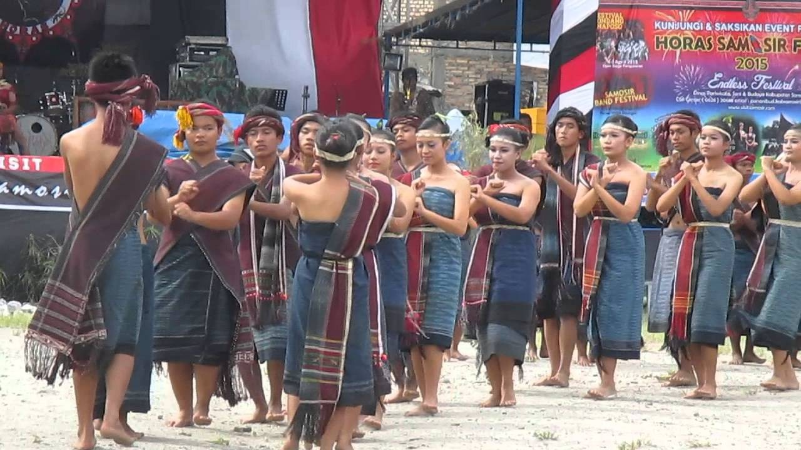
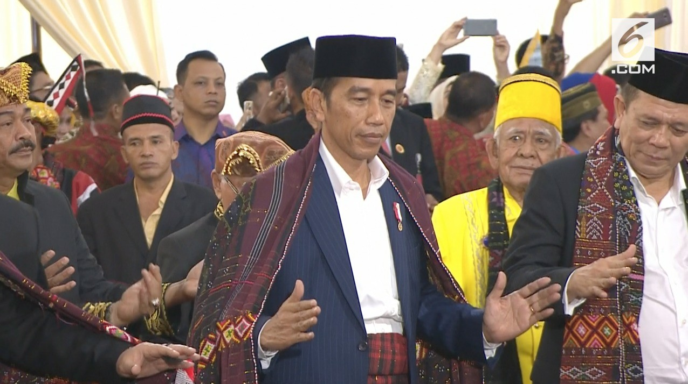
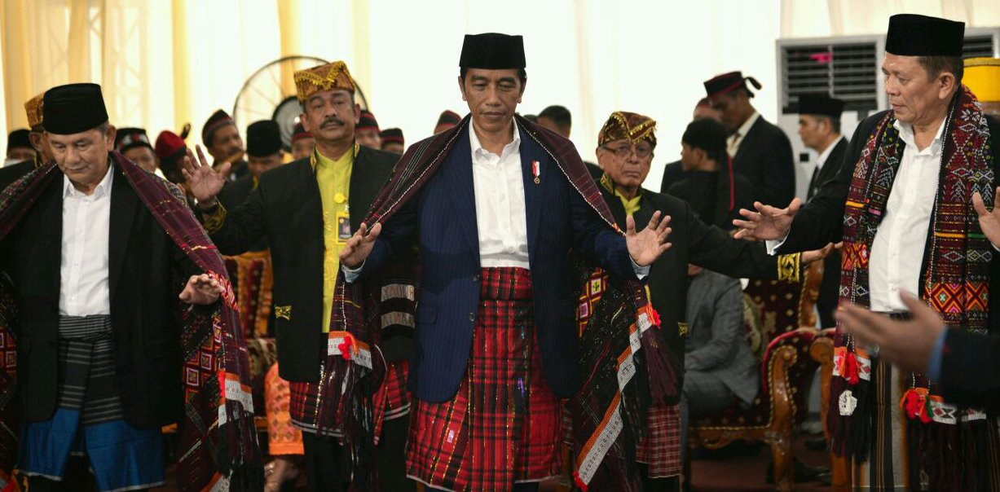
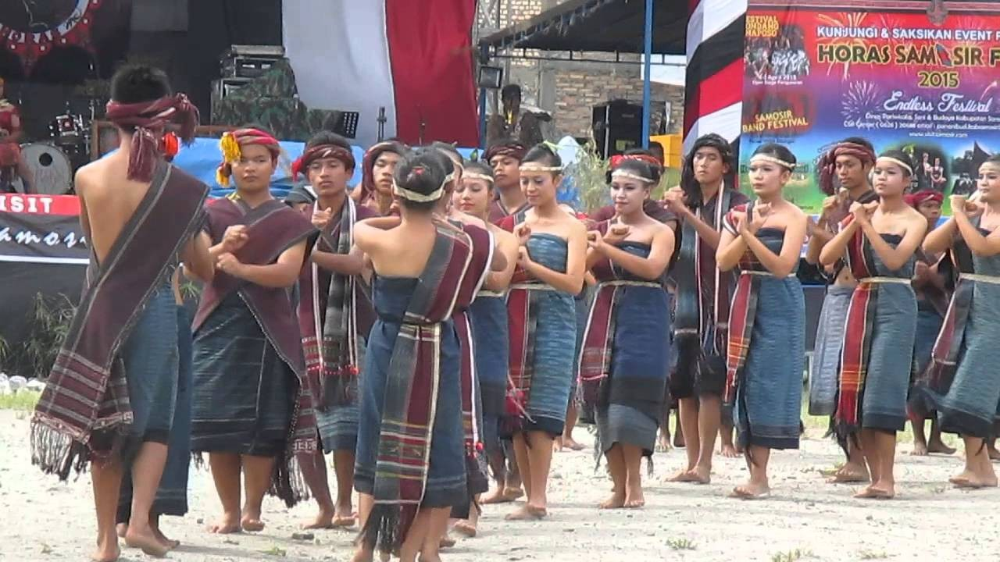
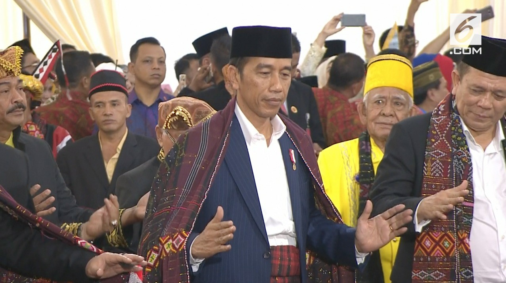
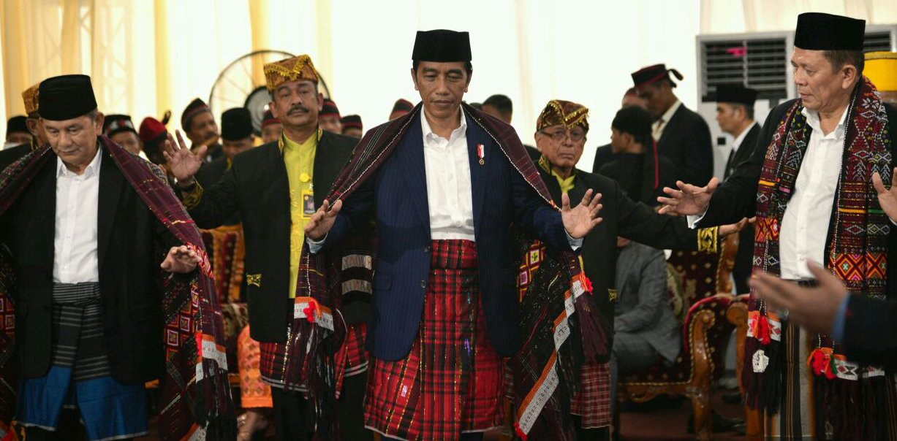
Tortor Batak Toba adalah jenis tarian purba dari Batak Toba yang berasal dari Sumatera Utara yang meliputi daerah Tapanuli Utara, Humbang Hasundutan, Toba Samosir dan Samosir.Tortor adalah tarian seremonial yang disajikan dengan musik gondang. Secara fisik tortor merupakan tarian, namun makna yang lebih dari gerakan-gerakannya menunjukkan tortor adalah sebuah media komunikasi, di mana melalui gerakan yang disajikan terjadi interaksi antara partisipan upacara.
Tortor dan musik gondang ibarat koin yang tidak bisa dipisahkan. Sebelum acara dilakukan terbuka terlebih dahulu tuan rumah (Hasuhutan) melakukan acara khusus yang dinamakan Tua ni Gondang, sehingga berkat dari gondang sabangunan.
Dalam pelaksanaan tarian tersebut salah seorang dari hasuhutan (yang mempunyai hajat akan memintak permintaan kepada penabuh gondang dengan kata-kata yang sopan dan santun sebagai berikut : "Amang pardoal pargonci" :
1."Alualuhon ma jolo tu ompungta Debata Mulajadi Nabolon, na Jumadihon nasa na adong, na jumadihon manisia dohot sude isi ni portibion."
2."Alualuhon ma muse tu sumangot ni ompungta sijolojolo tubu, sumangot ni ompungta paisada, ompungta paidua, sahat tu papituhon."
3."Alualuhon ma jolo tu sahala ni angka amanta raja na liat nalolo."
Setiap selesai satu permintaan selalu diselingi dengan pukulan gondang dengan ritme tertentu dalam beberapa saat. Setelah permintaan/seruan tersebut dilaksanakan dengan baik maka barisan keluarga suhut yang telah siap manortor (menari) mengatur susunan tempat berdirinya untuk memulai menari.
Adapun jenis permintaan jenis lagu yang akan dibunyikan adalah seperti :
Permohonan kepada Dewa dan pada ro-roh leluhur agar keluarga suhut yang mengadakan acara diberi keselamatan kesejahteraan, kebahagiaan, dan rezeki yang berlimpah ruah, dan upacara adat yang akan dilaksanakan menjadi sumber berkat bagi suhut dan seluruh keluarga, serta para undangan.
Tortor Batak Toba adalah jenis tarian purba dari Batak Toba yang berasal dari Sumatera Utara yang meliputi daerah Tapanuli Utara, Humbang Hasundutan, Toba Samosir dan Samosir.Tortor adalah tarian seremonial yang disajikan dengan musik gondang. Secara fisik tortor merupakan tarian, namun makna yang lebih dari gerakan-gerakannya menunjukkan tortor adalah sebuah media komunikasi, di mana melalui gerakan yang disajikan terjadi interaksi antara partisipan upacara.